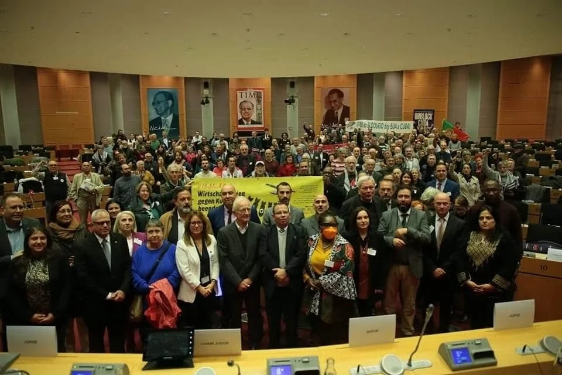
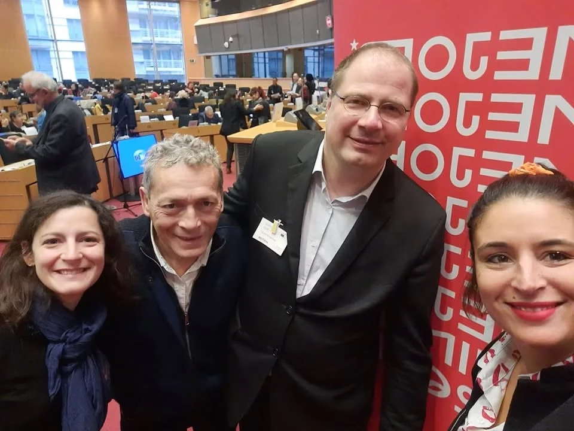
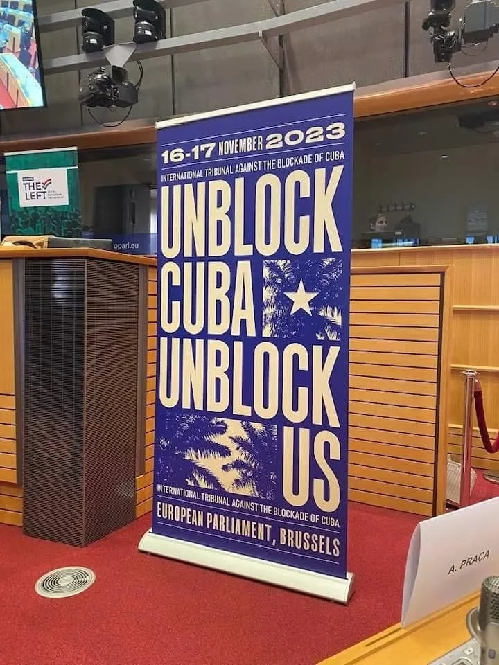

Publication relayée
Au Parlement européen, un tribunal d’opinion sur le blocus de Cuba
Date de mise à jour indiquée par Facebook · 17 novembre 2023
Repères éditoriaux
Nous avons relayé les images du tribunal d’opinion contre le blocus de Cuba, organisé en novembre 2023 dans les locaux du Parlement européen.
Texte de la publication · PCF national
Hier et aujourd'hui se tenait au Parlement Européen le "Tribunal contre le blocus" convoqué par des juristes internationaux•ales avec des témoins et mouvements de solidarité venus de tous les continents.
Des juges et procureurs venu•es évaluer l'impact du blocus sur le peuple cubain mais également sur les peuples européens avec l'application extraterritoriale du chapitre IV de la loi Helms Burton empêchant des relations commerciales et politiques normalisées avec l'île.
Un jugement qui confirme le caractère criminel du blocus en violation du chapitre 2 point 2 et 4 de la Charte des Nations Unies et selon laquelle "Les Membres de l'Organisation s'abstiennent, dans leurs relations internationales, de recourir à la menace ou à l'emploi de la force, soit contre l'intégrité territoriale ou l'indépendance politique de tout État, soit de toute autre manière incompatible avec les buts des Nations Unies."
Ce blocus, le plus long de l'histoire contemporaine constitue un véritable "crime contre l'humanité" selon le délibéré des juges qui appelle à des sanctions contre les États-Unis et des dommages et intérêts pour l'état, les entreprises et la population cubaine.
Une initiative importante qui doit nous aider dans la bataille politique pour faire connaître la réalité du blocus, exiger l'arrêt de cette politique infâme et le retrait du pays des états sponsorisants le terrorisme!
#VivaCuba #CubaSiBloqueoNo #MejorSinBloqueo #UnBlockCuba



Sources
PCF national · publication relayée par le PCF 79 · bibliothèque Facebook · AR-0002-FB-01539
À lire aussi · Le blocus contre Cuba : un crime monstrueux et passé sous silence depuis plus de 62 ans